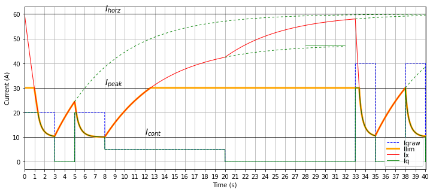

5.6.5.1. 简单动态电流限制¶
此算法近似一个关于电流 \(I_x\)的微分方程，并确定电流限制 \(I_{\lim}\) 为 \(I_x\) 和预定的固定峰值电流 \(I_{\rm peak}\)的最小值。此方程如下：
电流渐近地放松到“地平线”电流 \(I_{\rm horz}\)。示例如 图 5.92所示，其中 \(I_{\rm horz} =\) 60 A, \(I_{\rm peak} =\) 30 A, \(I_{\rm cont} =\) 10 A, \(\tau =\) 6 seconds.
地平线电流还决定了电流从连续电流电平上升时的旋转率；具体来说，如果电流命令从 \(I_{\rm cont}\) 阶跃变化到零，电流限制的旋转率为 \((I_{\rm horz}-I_{\rm cont})/\tau\)。在 图 5.92中，这发生在 \(t=\) 3 seconds.

图 5.92 简单动态电流限制的仿真。仅显示 q 轴电流 \(I_q\) ；d 轴电流 \(I_d\) 假定被控制为零或接近零。¶
在此情况下，如果电机电流在足够长的时间内足够低，使电流 \(I_x\) 几乎放松回地平线电流，驱动器可以提供 20 A 电流约 1.3 秒，约 3 秒后降到 10 A 的连续限制。在 30 A 的完整峰值电流下运行会更快用尽暂态容量，持续约 0.4 秒，约 2 秒后降到 10A 的连续限制。
电机转矩可以相当大，仍允许电流限制回到接近最大值，因为受热限制的组件的发热与电流的平方成正比。即使是连续电流限制的 50%，也只产生连续电流温升的 25%，这允许电机和晶体管冷却。这如 图 5.92 所示，在 \(t=\) 8 秒。（反之，两倍的连续电流限制会产生四倍的功率损耗。）
注意，由于 \(I_d{}^2 + I_q{}^2\) 累积以减小电流限制，电流方向和旋转方向都不重要； \(I_q\) 的正负值对电流限制的影响相同。
5.6.5.1.1. 参数选择¶
此处的参数选择对于每个板会有所不同，应进行验证以确保电机和晶体管保持在其安全工作区。
除了峰值和连续限制（在 动态电流算法主节中说明）外，另外两个参数应根据经验选择：
时间常数 \(\tau\) 应与实际系统的热动态有某种相似性。选择过小的值会过早降低电流限制，因此如果电机和晶体管未受热很多，则应使用更大的时间常数。同样，如果电机或晶体管在电流限制降低之前已加热到不安全的水平，则时间常数可能过大。
地平线电流 \(I_{\rm horz}\) 影响热容余量：更大的值允许电流限制在更长时间内保持较高，并允许电流限制在电机电流降回小值后更快增加。
5.6.5.1.2. 实现说明¶
由于热动态相当慢（十分之一秒到几十秒），此算法被分区，其中大部分以相对于电流控制采样率抽取的速率执行。
在完整采样率（采样时间 \(T_s\)）下，电流的平方幅值 \(I_d{}^2 + I_q{}^2\) 被累加。
动态电流限制算法的其余部分以抽取率（周期 = \(nT_s\) ，其中 \(n=128\) 为默认值）运行，更新电流 \(I_x\) 基于累加的平方电流。